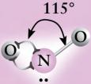
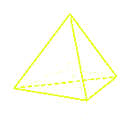
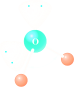

VSEPR
Secondo la teoria del legame di valenza, la geometri dua una molecola dipende dall'orientazione degli orbitali che si sovrappongono per formare i legami. Nella molecola H2O i due legami O−H derivano dalla sovrapposizioen di due orbitali di O con gli orbitali 1s dei due atomi di H. Se l'O utilizzasse due orbitali atomici 2p, poiché gli orbitali di tipo p sono perpendicolari tra di loro, la molecola dobrebbe presentare un angolo di 90°: se invece l'O utilizzasse orbitali ibridi sp3, l'angolo di lrgame dovrebbe essere il 109°28'. I dati sperimentali mostrano che i due legami O−H formano un angolo di 104°30', che non corrisponde né all'orientazione degli orbitali atomici né a quella degli orbitali ibridi.
La disposizione spaziale dei vari legami può essere prevista in base alla VSEPR. Valence shell electron-pair repulsion (toeria della repulsione tra le coppie di elettroni dello strato di valenza) (VSEPR) model, is useful in predicting the geometries of molecules formed from nonmetals starting from thei Lewis structures. The main postulate of this model is that the structure around a given atom is determined principally by minimizing electron-pair repulsions and as the same suggests, it is only the valence electrons (typically ns and np) that are involved in determining the molecular shape. These valence electrons may be involved in the formation of single, double, or triple bonds, or they may be unshared (lone pair). The idea is that the bonding and nonbonding pairs around a given atom should be positioned as far apart as possible. However, the model does not take steric factors (i.e. the relative sizes of substituents) into account.
The number of electron pairs (groups) surrounding the central atom, both bonding and non-bonding, is called its steric number. It plays an essential role in VSEPR theory in assessing the molecular geometry. The steric number can be calculated by the Lewis structure of the molecule,

In the VSEPR theory, each of the following counts as one electron group:
an unshared pair of valence electrons;
a single bond, a double bond and a triple bond.
There are three sets of electron pairs, in the nitrite ion, two sets of bonding pairs and a lone pair.
| Number of Electron Pairs (Steric Number) | Lewis Structure | Number of lone pairs on Central Atom | Geometry | Examples | |
|---|---|---|---|---|---|
| 2 | 0 | linear | O=C=O, H−C≡N, Cl-Be-Cl | ||
| 3 | 0 |  trigonal planar trigonal planar | |||
| nitrite ion | 1 | Bent or Angular | bent or angular | ||
| 4 | 0 | tetrahedrical | |||
| 1 | Trigonal pyramidal | |||
| 2 | Bent or Angular (V-Shape) | ||||
| 5 |  | trigonal bipyramidal | 90°, 120°, 180° | H2O, PCl5 |  |
| 6 | octahedral | 90°, 180° | SF6 |  |
Linear Geometry
To see how VSEPR works, we will first consider the molecule BeCl2, (the same for beryllium hydride BeH2) with Lewis structure:
| Lewis structure | |
|---|---|
| Valence electrons on central atom | 2, 2s2 |
| 2 Cl contribute 1 electron | 2 |
| tot. | 4 |
| Divide by 2 to give electron pairs (steric numbers) | 2 (linear geometry) |
There are two electron pairs in the valence shell of beryllium atom, 1s22s2. Given that repulsion drives these groups as afar away from each other as possible, the best arrangement is for them to be positioned at opposite ends of the Be atom or 180° apart in a linear arrangement.
Note. VSEPR explains the geometry of BCl2 but its bondings is explained by the hybridization of the Be orbitals.
This type of geometry is also predicted for CO2. Therefore CO2, with its two double bonds is considered to have two electron groups (rathen than four) and it is as well linear.
Trigonal planar geometry
Next, let’s consider Boron trifluoride, BF3.
| Lewis structure |  |
|---|---|
| Valence electrons on central atom | 3, s22p1 |
| 3 F contribute 1 electron | 3 |
| tot. | 6 |
| Divide by 2 to give electron pairs | 3 (trigonal planar) |
The electron pairs are farthest apart at angles of 120 degrees:

This is a planar (flat) and triangular molecule, which is commonly described as trigonal planar.
Tetrahedral geometry
| Lewis structure |  |
|---|---|
| Valence electrons on central atom | 4, s22p2 |
| 4 H contribute 1 electron | 4 |
| tot. | 8 |
| Divide by 2 to give electron pairs | 4 (tetrahedral) |
There are four pairs of electrons around the central carbon atom. What arrangement of these electron pairs best minimizes the repulsions? In the Lewis structure depicted above, the angles between the pairs are all 90 degrees. Is there another arrangement with angles greater than 90 degrees that would put the electron pairs even farther away from each other? The answer is yes. The regular tetrahedral arrangement has angles of 109 degrees. The experimental measured angle for methan differes slightly and it's of 109.5 degrees
Let's examine the ammonia molecule, with the following Lewis structure:
| Lewis structure | |
|---|---|
| Valence electrons on central atom | 5, s22p3 |
| 3 H contribute 1 electron | 3 |
| tot. | 8 |
| Divide by 2 to give electron pairs | 4 (tetrahedral) |
Trigonal Pyramidal Geometry
The NH3 molecule has four pairs of electrons: three bonding pairs and one nonbonding pair. From the discussion of the methane molecule, we know that the best arrangement of four electron pairs is a tetrahedral array.

Because the electron-pair geometry in NH3 is tetrahedral, we would expect the H−N−H bond angle to be 109.5°. However, the experimentally determined bond angles in NH3 are 107°3'.
The placement of the electron pairs determines the structure, but the name is based on the positions of the atoms. Thus it is incorrect to say that the NH3 molecule is tetrahedral. It has a tetrahedral arrangement of electron pairs but not a tetrahedral arrangement of atoms. The molecular structure of ammonia is a trigonal pyramid (one triangular side is different from the other three), rather than a tetrahedron
| Lewis structure |  |
|---|---|
| Valence electrons on central atom | 6, s22p4 |
| 2 H contribute 1 electron | 2 |
| tot. | 8 |
| Divide by 2 to give electron pairs | 4 (tetrahedral) |
Note that there are four pairs of electrons about the oxygen atom: two bonding pairs and two nonbonding pairs. According to the VSEPR model, these are directed tetrahedrally
The experimental bond-leght value of O−H is 0.9572 Å while the bond angle is of 104°30'. Although H2O has a tetrahedral arrangement of electron pairs, it is not a tetrahedral molecule. The atoms in the H2O molecule form a V-shape.
From the previous discussion on the structure of methana, ammonia and water. Let's examine the following data.
| CH4 | NH3 | H2O | |
|---|---|---|---|
| Number of lone pairs | 0 | 1 | 2 |
| Bond angle | 109.5 | 107°3' | 104°30 |
Octahedral geometry
For hexafluorophosphate, [PF6]-, there are six bonded groups and so no lone pairs. This anion is useful in synthesis since it often aids the crystallization of bulky cations by providing a reasonable size match for the cation. Note that the negative charge for the purposes of the calculation is placed on phosphorus for the purpose of the calculation even though the negative charge is in reality delocalized over all seven atoms of the ion.
| Structure |  |
|---|---|
| Valence electrons on central atom | 5, s22p3 |
| 6 F contribute 1 electron | 6 |
| Add one for the negative charge on P | 1 |
| tot. | 12 |
| Divide by 2 to give electron pairs | 6 (Octahedral) |
The trend observed here is that lone pairs require more space than bonding pairs; in other words, as the number of lone pairs increases, the bonding pairs are increasingly squeezed together. Lone pairs of electrons seem to occupy a larger volume than bonding pairs, and the increased volume of lone pairs causes bond pairs to squeeze closer together. In general, the relative strengths of repulsions are in the order
Lone pair–lone pair > lone pair–bond pair > bond pair–bond pair
The VSEPR Model—How Well Does It Work?
The VSEPR model is very simple. There are only a few rules to remember, yet the model correctly predicts the molecular structures of most molecules formed from nonmetallic elements. Molecules of any size can be treated by applying the VSEPR model to each appropriate atom (those bonded to at least two other atoms) in the molecule. Thus we can use this model to predict the structures of molecules with hundreds of atoms. It does, however, fail in a few instances. For example, phosphine (PH3), which has a Lewis structure analogous to that of ammonia,
.. H−P−H | H
would be predicted to have a molecular structure similar to that for NH3 with bond angles of about 107 degrees. However, the bond angles of phosphine are actually 94 degrees. There are ways of explaining this structure, but more rules have to be added to the model.
This example again illustrates the point that simple models will certainly have exceptions. In introductory chemistry we want to use simple models that fit the majority of cases; we are willing to accept a few failures rather than complicate the model. The amazing thing about the VSEPR model is that such a simple model correctly predicts the structures of so many molecules.